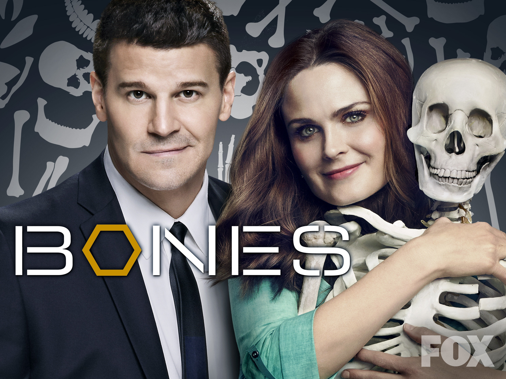
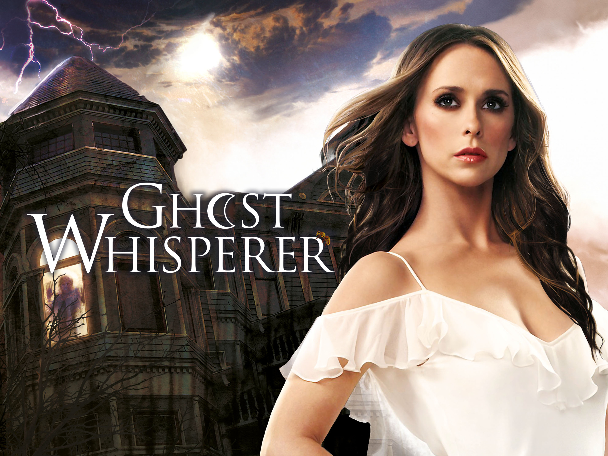
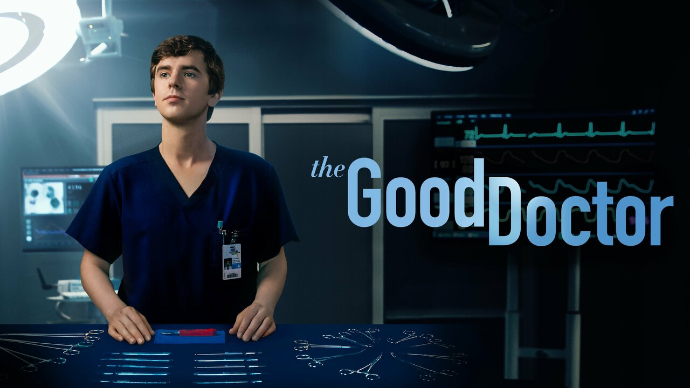
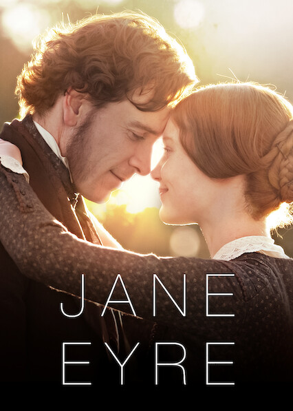
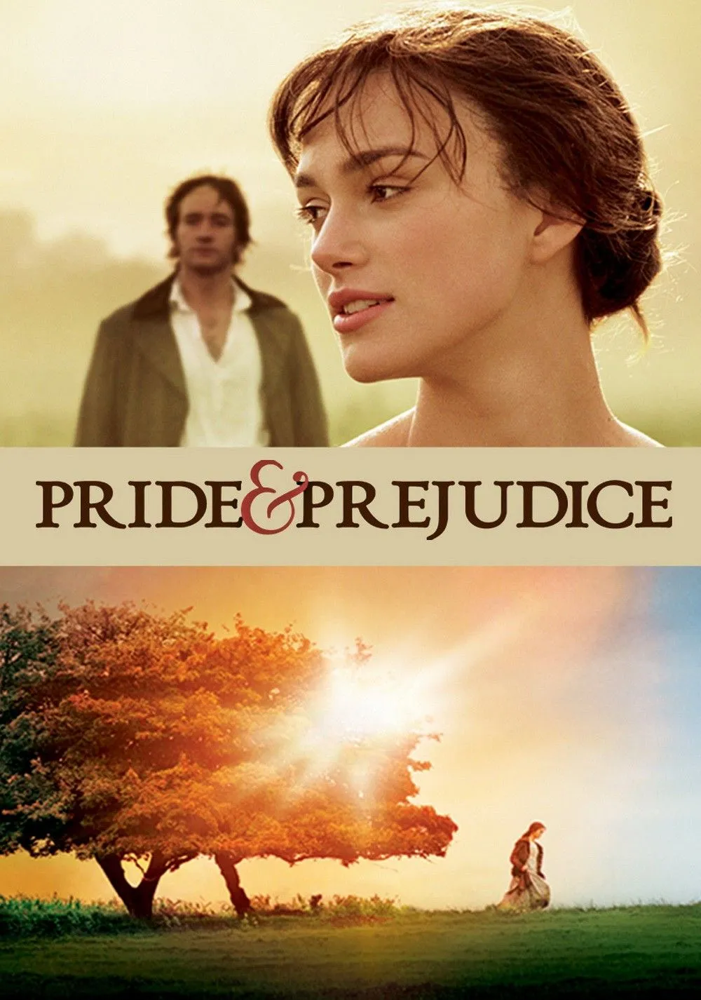

Una interesante temática de crímenes y misterio en el que cooperan la antropóloga forense, Temperance Brennan, y el agente especial,Seeley Booth. ¿Te atreves a adentrarte en el fascinante, y a menudo peligroso, mundo de la investigación donde todo detalle es importante y en el que nada es lo que parece?

La habilidad de comunicarse con los espíritus fue un regalo que se le dio a Melinda Gordon, una mujer de gran corazón que buscará ayudar a los espíritus con sus asuntos pendientes para que crucen al otro lado. ¿Pero es este don una bendición o una maldición? ¿Y cómo puede afectarle eso a su vida personal y social?

Shaun Murphy empieza su residencia en un prestigioso hospital en donde tendrá que hacer frente a las dificultades que se le presentarán, una de las más destacadas se debe a que lo consideran 'diferente', pero deberá hacer entender al mundo que su capacidad para converirse en cirujano no está limitada por cómo es.
El brillante psiquiatra Dr. Hannibal Lecter y el detective Will Graham comparten una compleja relación que se desarrolla durante los casos criminales oscuros que enfrentan. El horror psicológico se mezcla con el arte visual, de esa forma se desarrolla una atmósfera inquietante y profunda donde lo fascinante y lo peligroso se entrelaza.
Las mejores películas inglesas.
El equipo de héroes de la Tierra, también conocidos como: "Los Vengadores" enfrentaron su mayor desafío con la llegada de Thanos. Por desgracia, la mitad de la población despareció y la única manera de regresar a todo el mundo es aventurarse en una aventura por el tiempo y el espacio.

Una joven huérfana se convierte en institutriz en ThornField Hall donde se enamora del señor Rochester. A medida que su relación se profundiza la joven descubre secretos oscuros que amenazan su futuro juntos. ¿Cúal decidirá Jane tras descubrir los grandes secretos que se le ocultaron?

Elizabeth Bennet, una joven inteligente y rebelde desafía las expectativas de la sociedad mientras su atracción por el reservado y misterioso señor Darcy crece. ¿Podrá el amor verdadero superar las barreras del prejuicio y las apariencias o caerá contra el orgullo y los malentendidos?
Un equipo femenino de voleibol lucha por mantenerse unido y alcanzar el campeonato nacional tras la trágica pérdida de su capitana. Para ello, deben alcanzar una gran determinación y resiliencia. ¿Podrán conseguir su gran sueño a pesar de los inconvenientes?